| [ << Notation manual tables ] | [Top][Contents][Index] | [ GNU Free Documentation License >> ] |
| [ < LilyPond exported predicates ] | [ Up : Top ] | [ GNU Free Documentation License > ] |
B. Cheat sheet
| Syntax | Description | Example |
1 2 8 16 | durations |
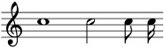 |
c4. c4.. | augmentation dots |
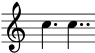 |
c d e f g a b | scale |
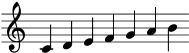 |
fis bes | alteration |
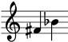 |
\clef treble \clef bass | clefs |
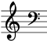 |
\time 3/4 \time 4/4 | time signature |
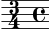 |
r4 r8 | rest |
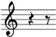 |
d ~ d | tie |
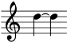 |
\key es \major | key signature |
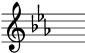 |
note' | raise octave |
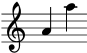 |
note, | lower octave |
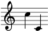 |
c( d e) | slur |
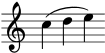 |
c\( c( d) e\) | phrasing slur |
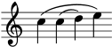 |
a8[ b] | beam |
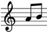 |
<< \new Staff … >> | more staves |
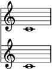 |
c-> c-. | articulations |
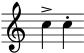 |
c2\mf c\sfz | dynamics |
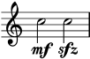 |
a\< a a\! | crescendo |
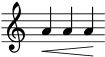 |
a\> a a\! | decrescendo |
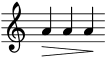 |
< > | chord |
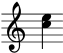 |
\partial 8 | pickup / upbeat |
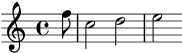 |
\tuplet 3/2 {f g a} | triplets |
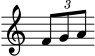 |
\grace | grace notes |
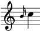 |
\lyricmode { twinkle } | entering lyrics | twinkle |
\new Lyrics | printing lyrics | |
twin -- kle | lyric hyphen |
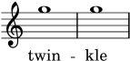 |
\chordmode { c:dim f:maj7 } | chords |
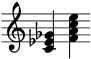 |
\new ChordNames | printing chord names | |
<<{e f} \\ {c d}>> | polyphony |
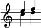 |
s4 s8 s16 | spacer rests |
| [ << Notation manual tables ] | [Top][Contents][Index] | [ GNU Free Documentation License >> ] |
| [ < LilyPond exported predicates ] | [ Up : Top ] | [ GNU Free Documentation License > ] |